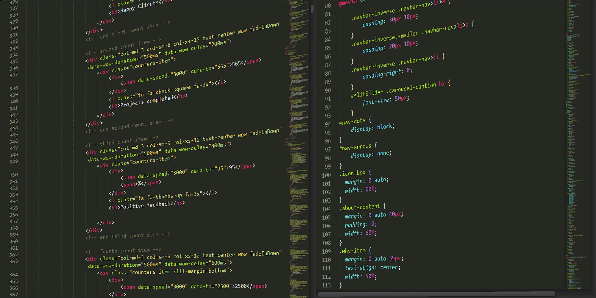

Acerca de Git.
¿Qué es Git?
Git es un sistema de control de versiones distribuido, lo que significa
que cada copia del proyecto en un computador es un repositorio completo.
Esto facilita el trabajo sin conexión o de forma remota, y permite a los
equipos colaborar de manera eficiente.
Regresar.
¿Para qué sirve Git?
Git se utiliza para:
-
Realizar un seguimiento de los cambios: Permite ver el historial
completo de modificaciones en un proyecto, incluyendo quién las
realizó, cuándo y por qué.
-
Revertir cambios: Si se comete un error, es posible retroceder a una
versión anterior del proyecto.
-
Trabajar en equipo: Facilita la colaboración entre varios
desarrolladores, incluso si se encuentran en diferentes ubicaciones.
-
Compartir código: Permite compartir fácilmente el código de un
proyecto con otros, ya sea de forma pública o privada.
¿Cuáles son las ventajas de usar Git?
-
Control de versiones: Permite un seguimiento preciso de los cambios en
el código, facilitando la reversión de errores y la comparación de
diferentes versiones.
-
Colaboración: Facilita el trabajo en equipo, incluso si los
desarrolladores no se encuentran en la misma ubicación.
-
Eficiencia: Permite ahorrar tiempo y esfuerzo al automatizar tareas
repetitivas.
-
Seguridad: Protege el código del proyecto contra errores humanos y
fallos del sistema.
